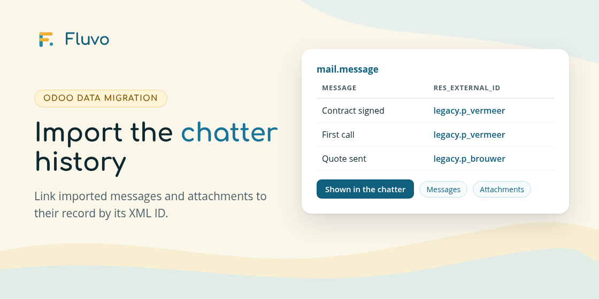
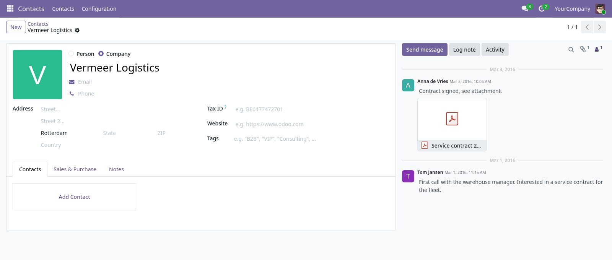

Link imported messages, attachments and activities to their record by its XML ID, without knowing database ids.

A res_external_id column with the XML ID of the
record sets both the model and the id of the document.
Works for chatter messages, attachments and activities, and for messages that carry their attachments.
An XML ID that does not exist stops the import with a clear error, instead of creating a message that is linked to nothing.
Import the attachments first, then the messages that refer to them.
Both point to their record with res_external_id:
1. Attachments (ir.attachment)
| id | name | datas | res_external_id |
|---|---|---|---|
legacy.att_contract |
Service contract 2016.pdf | JVBERi0... | legacy.p_vermeer |
2. Messages (mail.message)
| body | author_id/id | date | res_external_id | attachment_ids/id |
|---|---|---|---|---|
| Contract signed | legacy.anna |
2016-03-03 09:05:00 | legacy.p_vermeer |
legacy.att_contract |
3. Activities (mail.activity)
| activity_type_id/id | summary | date_deadline | user_id/id | res_external_id |
|---|---|---|---|---|
mail.mail_activity_data_call |
Renew the contract | 2026-12-01 | legacy.user_anna |
legacy.p_vermeer |

The messages keep their author and date. The usual access rights apply to the record the message, attachment or activity is linked to.
"mail_create_nolog": True in the context, so
that Odoo does not add a created message of today.